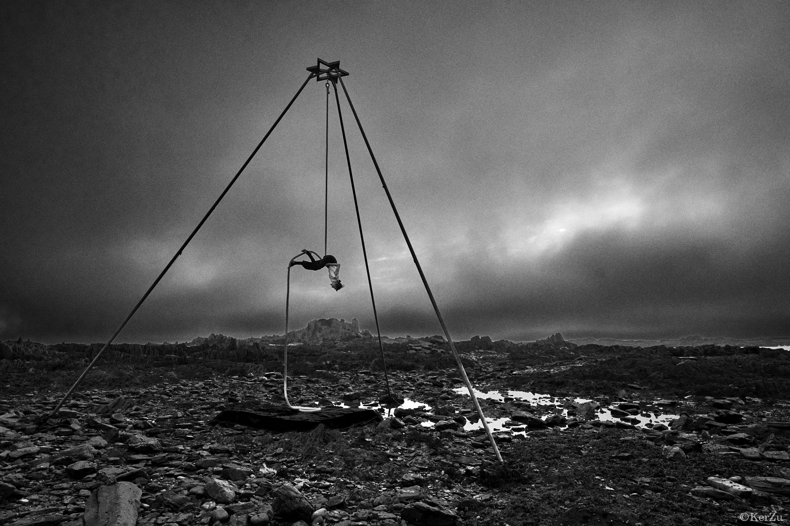
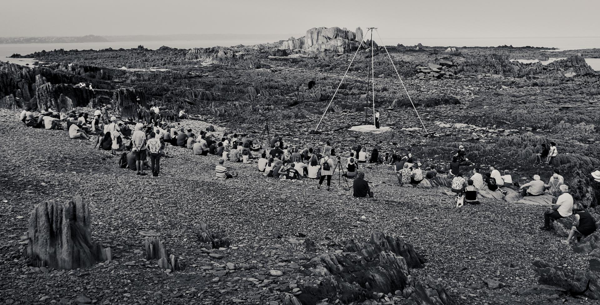

Argument
La lettre d'Ariane à Thésée fait résonner la voix de l'héroïne à l'endroit où elle fut abandonnée par Thésée après l'avoir aidé à sortir du labyrinthe où était enfermé le Minotaure, au sommet d'une île battue par les vents. De cette île déserte Ariane écrit à Thésée, elle livre le récit de son abandon, comment elle s'est réveillée ce matin-là, un beau matin de printemps, seule. Ce doute affreux qui la saisit, son errance panique sur le rivage jusqu'à cette course éperdue jusqu'au sommet de l'île pour voir et savoir enfin ce navire qui part sans elle avec à son bord cet homme qui avait juré de l'aimer toujours et qui ne se retourne même pas.
Le fil d'Ariane
Le choix de l'usage simultané du texte et de la danse aérienne est assorti à l'idée que l'agrès acrobatique corde lisse va apporter au texte, accroître sa puissance narrative et dramaturgique et lui donner une matière, mais aussi que le texte va faire entrer le mouvement du corps dans un espace narratif.
La corde c'est à la fois le fil du récit d'Ariane, le fil de sa pensée, le fil qu'elle déroule pour essayer de retrouver son chemin, Ariane, perdue sur une île sans possibilité d'en échapper, perdue pour sa patrie qu'elle a trahie, abandonnée par l'homme qu'elle aimait, perdue par elle-même dans le labyrinthe de ses illusions. La corde devient tour à tour montagne, cordage d'un bateau qui s'éloigne à l'horizon, récif, falaise, fil auquel on se retient de s'enfoncer dans le sable, fil auquel on se raccroche pour ne pas tomber dans le vide, fil fantôme d'un autre fil déroulé dans les mains d'un autre.
Le fil sonore
Lorsque j'ai commencé à travailler sur la Lettre d'Ariane à Thésée, c'était la première fois que je m'engageais dans un spectacle sans autre accompagnement sonore que ma propre voix, avec de longs passages de danse sur corde dans un silence total. Ce silence m'inquiétait ; j'avais peur de m'y perdre.
Dédale s'est d'abord construit en musique, avec l'idée de semer des notes dans le silence pour y tracer un chemin. Les Gnossiennes d'Erik Satie se sont imposées naturellement, et j'ai créé la chorégraphie en les écoutant. J'ai choisi ensuite de faire disparaître cette musique pour laisser toute sa place au silence. Au montage des séquences filmées sur l'estran, il m'est apparu qu'il manquait les notes du piano pour la plénitude du spectacle. Je souhaite donc rendre au piano sa juste place.
Les Gnossiennes 1, 2, 3 et 4 seront intégrées au spectacle selon un découpage qui épouse la conduite corde-texte, déformées pour n'en faire plus qu'un écho, une réminiscence, afin d'accentuer l'aspect atemporel du récit et de conférer au paysage quelque chose de l'ordre du pictural. Selon le philosophe musicologue Vladimir Jankélévitch, pour Erik Satie « le temps gnossien, c'est le temps immobile, stoppé dans l'ostinato d'une chorégraphie et d'un rythme exclusifs de tout développement… »
La première forme, présentée en septembre 2023 au port de Locquémeau.

Presse
article "L'histoire d'une acrobate suspendue au fil d'Ariane" Ouest-France 11/09/2023
article Le Télégramme 11/09/2023
D'autres photos de Dédale
sur le site de Requin Production
sur la page Facebook de L'Oeil de Paco - photographe ---➳ site L'Oeil de Paco
Distribution
Dramaturgie, argument, réécriture du texte d'Ovide, écriture sonore et chorégraphique : Hélène BOU
Interprétation corde et voix : Hélène BOU
Réalisation sonore : Philippe OLLIVIER